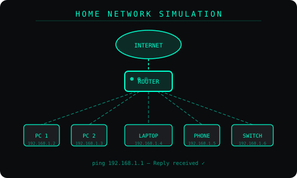
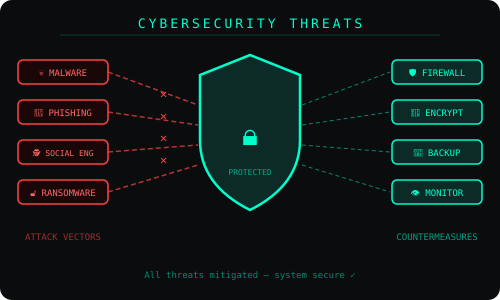
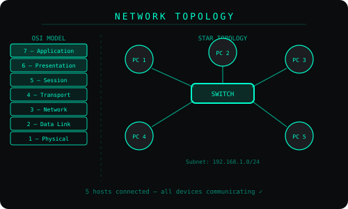

Network Topology & OSI Model; Maps the 7-layer OSI model alongside a star topology to show how data flows through a network — from physical hardware all the way up to the application layer. learn more about this project here.


Cybersecurity Threats & Countermeasures; Visualises how layered defences — firewall, encryption, backup, and monitoring — block real-world attacks like malware, phishing, and ransomware before they reach a system. learn more about this project here.

Home Network Simulation; Simulates a live home network with IP-assigned devices routed through a central gateway to the internet, demonstrating practical knowledge of subnetting and network communication. learn more about this project here.